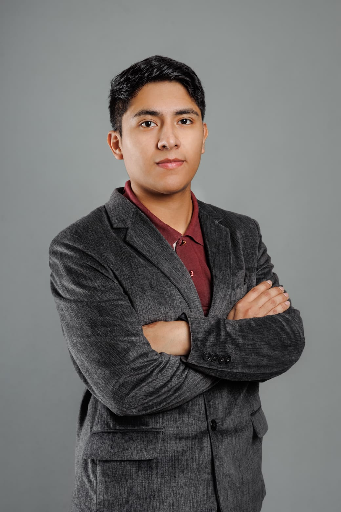

Profesional orientado a soluciones tecnológicas, soporte TI, administración de infraestructura, SAP Business One y bases de datos.
Estudiante de Ingeniería de Sistemas con experiencia en soporte TI, administración de infraestructura tecnológica, SAP Business One y bases de datos SQL Server/SAP HANA. Especializado en optimización de procesos, consultas SQL, soporte empresarial y desarrollo de soluciones tecnológicas orientadas al negocio.
Administración y soporte ERP empresarial.
Consultas, reportes y optimización de datos.
Servidores, redes, switches y routers.
Help Desk, instalación y mantenimiento.
Dashboards e inteligencia de negocio.
PHP, HTML, CSS y JavaScript.
Administración de SAP Business One, mantenimiento de infraestructura TI, consultas SQL, soporte de servidores, redes y cámaras de seguridad.
Capacitación de usuarios, soporte del sistema DACTA, elaboración de dashboards y documentación técnica.
Gestión y control de activos, SAP Business One, reportes e inventario.